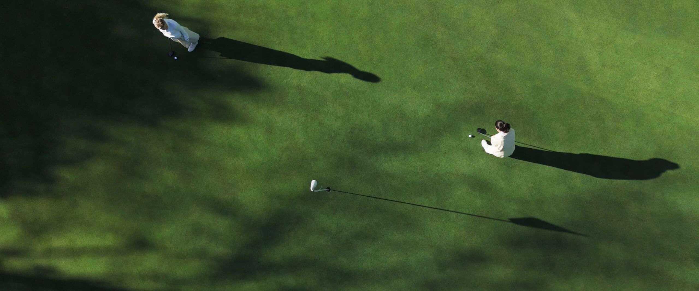
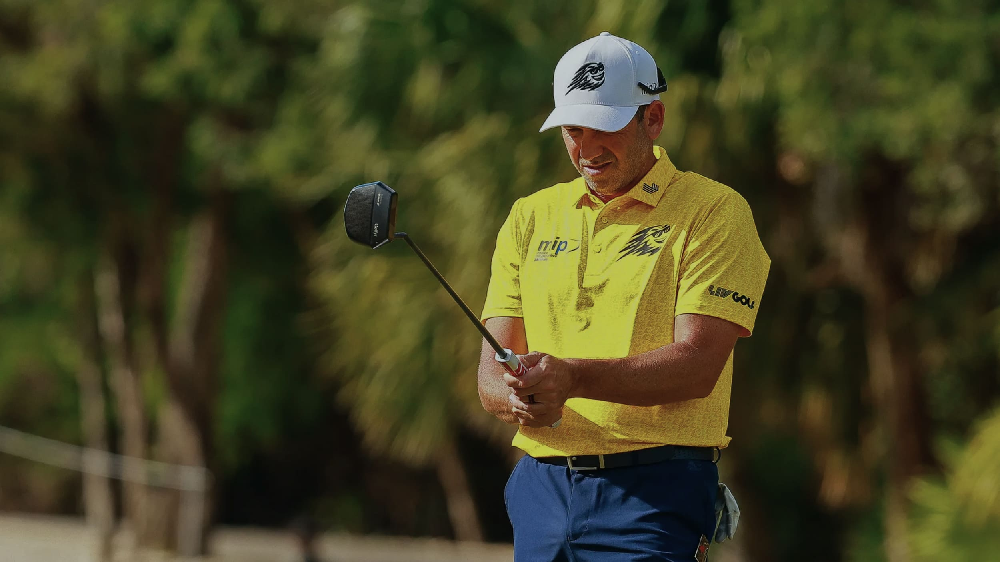
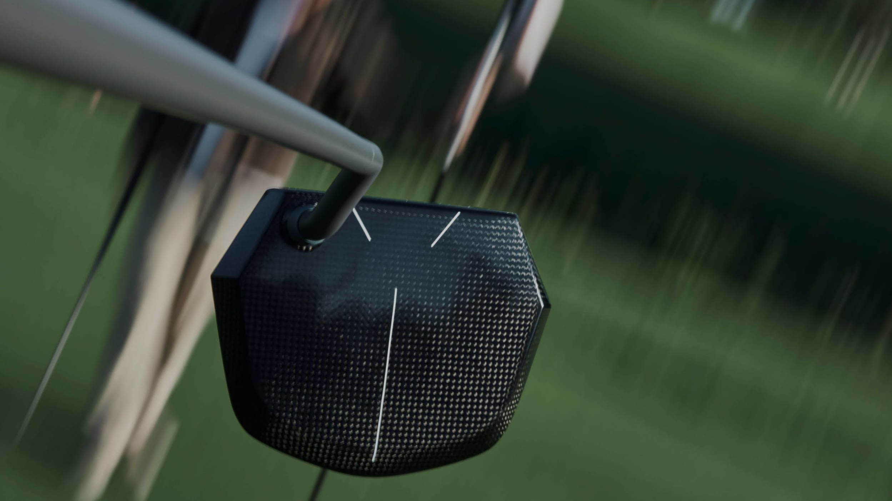
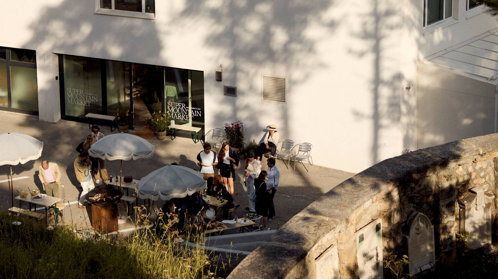
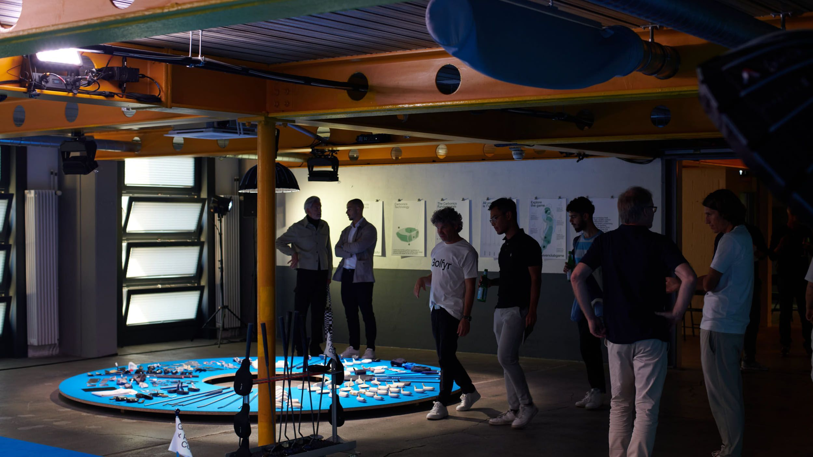
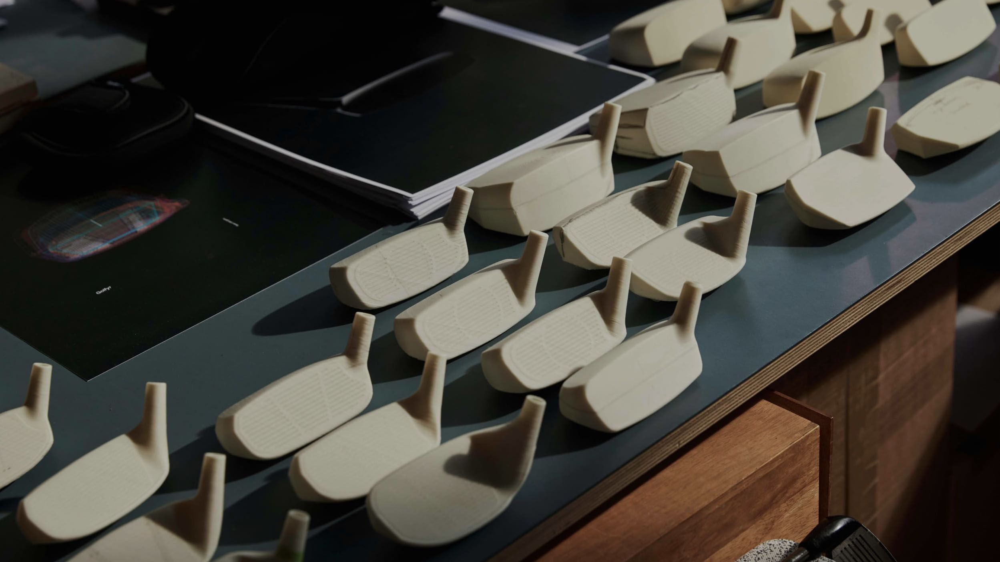
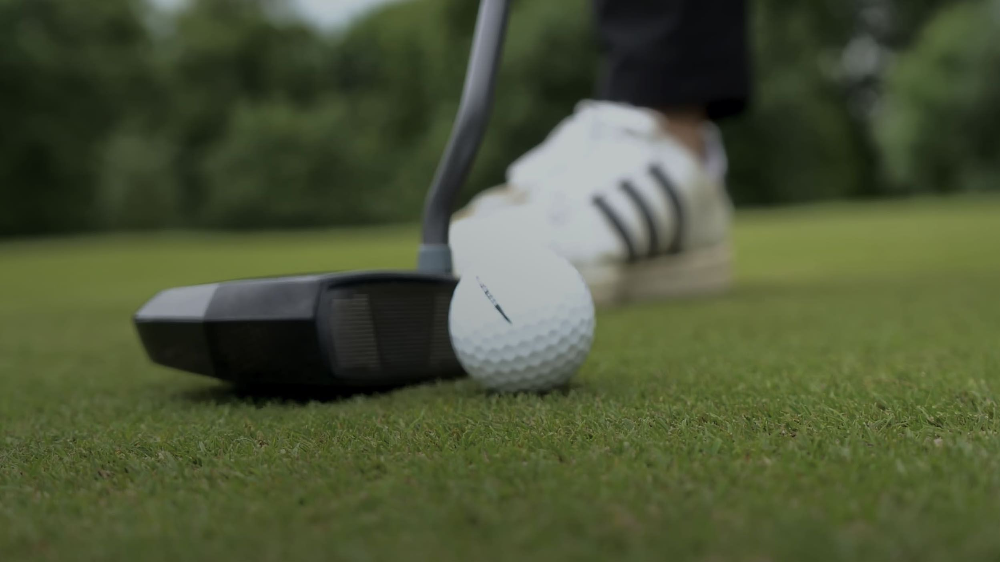

The Golfyr Mag

More articles

Form Follows Function: The Journey to the #sevenclubgame
For years, the Iron game it remained largely untouched by true innovation. At Golfyr, that became our starting point. What followed was nearly 15 years of development—driven by a belief in carbon not as a trend, but as a solution. A material chosen for its ability to absorb shock, redistribute weight with precision, and ultimately help golfers play better with less strain. The result is a set that balances innovation and tradition, reducing the game to what truly matters. Seven clubs, each designed with intention. A different way to think about performance. This is the philosophy behind the #sevenclubgame.
1 minute read
A Certified Step Forward: Golfyr Clubs Receive R&A Approval
Golfyr takes the next step: our complete #sevenclubgame is now officially approved by The R&A. That means innovation, design, and lightness – all within the rules. With our 100% carbon clubs, you don’t just play differently, you play better. Welcome to the new standard in golf.
2 minute read
A moment to remember: Sergio Garcia joins our journey
Sergio Garcia joins the Golfyr journey as co-developer of the new Maker “Tour” Edition. What started with a vision and carbon now grows through his experience and belief in our product. A milestone for us, a promise to you.
2 minute read
Seven clubs, one experience: the first #sevenclubgame in Bad Ragaz
The first #sevenclubgame in Bad Ragaz introduced a new way to play. Just seven clubs, a clear concept, and unexpected fun on every hole. A day that redefined what golf can feel like.
2 minute read
Carbon: The high-tech material that’s redefining golf
Discover how high-tech carbon is setting new standards in performance, precision, and design — and why Golfyr is redefining the future of the game.
2 minute read
14 is changing the game">Golf with 7 clubs? How 7>14 is changing the game
Fewer clubs, more golf: With our innovative 7>14 concept, we are revolutionizing the game. Seven specially designed clubs are all you need to master any situation on the course – making golf more intuitive, efficient, and fun.
2 minute read
Maker amazes on the professional golf circuit
Golf pro Sergio García is making waves with our innovative carbon putter – securing a podium finish at the LIV tournament in Mayakoba. The Maker is now officially "Tour approved," proving how our revolutionary design is reshaping golf. Discover the future of putting!
2 minute read
The magic of the Maker
The Maker is making a statement on the green: Experts and pros agree – our 1of7 carbon putter delivers outstanding performance and a unique design. The renowned magazine GolfMagic has even named it one of the best putters of 2024.
2 minute read
Super-Mountain-Putting in St. Moritz
From July 27 to September 9, 2024, we showcased our carbon putter at the exclusive Super Mountain Market concept store in St. Moritz. Among art, coffee, and BBQ, guests enjoyed a one-of-a-kind putting experience.
2 minute readInnovation meets vision
Golfyr founder Roger Stadler is redefining traditional golf. With his 7>14 vision and a simplified set of seven clubs, he is revolutionizing the sport. Built on cutting-edge technology and innovative materials, golf becomes more efficient, accessible, and fun – with greater precision on the course.
2 minute readDemo Days: Putt with the Maker
Our Maker is on tour! Join us at our Demo Days, test it on the greens, and experience the future of putting — no reservation needed.
2 minute read
Public putting at the 2023 Ryder Cup
During the legendary 2023 Ryder Cup in Rome, we introduced the Maker to the public for the first time. Golf fans in Zurich had the chance to test the carbon putter, take part in putting challenges, and experience the future of golf up close.
2 minute read
Design follows Technology
Golfyr Creative Director Alfredo Häberli seamlessly blends functionality and aesthetics – shaping the 7>14 vision with his distinctive style. His design approach challenges conventions, giving our clubs a unique identity.
2 minute read
Alex Elliot becomes a real Maker
PGA Top-50 coach and content creator Alex Elliot put the Maker to the test – and was impressed. In his review, he praises the SWISS MADE quality, precise craftsmanship, and outstanding performance on the green.
2 minute readSeven clubs to Mallorca
In the summer of 2022, we put our #sevenclubgame to the ultimate test — seven performance clubs, real course conditions, and one clear mission: proving that seven clubs are all you need to play your best. At Real Golf de Bendinat in Mallorca, our set demonstrated that less is more, making golf even more enjoyable.
2 minute readPress Articles

Golf Monthly February 2026
The Equipment Debrief: Two New Putters Grab Our Attention As Sergio Garcia Talks Through His Bag Line-Up
Read it
Golf Monthly October 2025
Sergio Garcia Spotted With Next Generation Of Unique Carbon Putter At Spanish Open
Read it


Golfplus / Das Migros Golf Magazin
The Migros Golf is pleased to welcome the start-up Golfyr as a new partner.
Read it
Swiss Golf Magazin
Golfyr: Noble Swiss golf clubs – produced to forgive.

Golf WRX
Sergio Garcia uses putter that even most equipment junkies won’t have heard of before
Read it